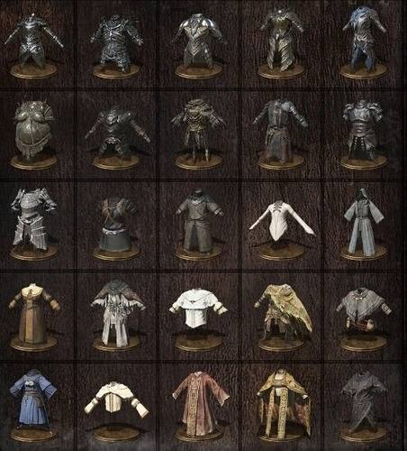

Armaduras
La armadura es una parte importante de Dark Souls y Dark Souls Remastered, ya que sus muchas resistencias y su peso determinarán tu eficiencia en el combate. Siendo que hay una amplia lista de conjuntos en el juego, así como sus estadísticas y la manera de optenerlas. La armadura también es una opción cosmética, y piezas individuales se pueden mezclar y combinar para crear una configuración optimizada. Las armaduras pueden ser mejoradas. La armadura se compone de piezas individuales como los cascos, corazas, guanteletes, botas. A su vez, existen diferentes clases de la misma siendo ligera, media y pesada.
Ejemplo de corazas varias.